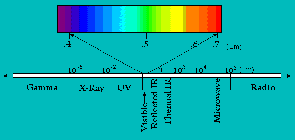
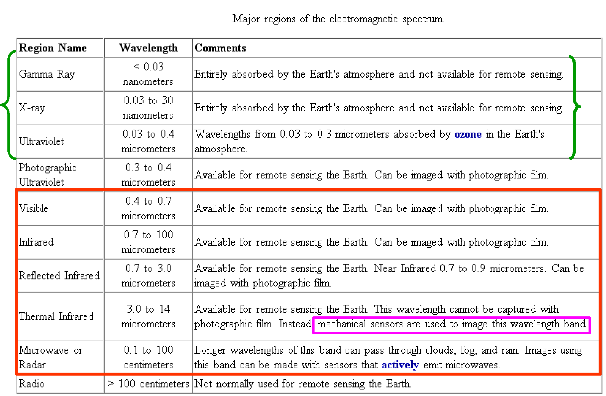

Electromagnetic Radiation (EMR) is the fundamental component of remote sensing. It provides simple basics on how the reflectance pattern of objects varies and how such information is utilized in the information extraction through remote sensing process. In this lab, one can understand how use of different parts (or bands) of the spectrum will lead to different imaging outcomes of the objects that exist in the area being imaged.

EMS represents the continuum of electromagnetic energy from extremely short wavelengths (cosmic and gamma rays) to extremely long wavelengths (microwaves). Spectrum is arbitrarily segmented into major divisions. There are no natural breaks in the EMS
|

Ref:http://www.udel.edu/Geography/DeLiberty/Geog474/geog474_energy_prin.html |
|  |
When radiation reaches an object, the object may absorb one part and reflect another part of the radiation. In all cases, the electromagnetic radiation’s characteristics will be modified. Plants use mainly the red part of the solar spectrum to carry out photosynthesis. The reflected light spectrum is thus devoid of this red band and the light reflected by the leaves appears green.
Different objects do not absorb the same parts of solar radiation. Consequently, their reflected ray spectra are different. The pattern of the electromagnetic spectrum reflected by an object is called its ‘spectral signature’. Remote sensing makes use of this property, for analyzing the characteristics of the electromagnetic spectra reflected by objects (their spectral signatures).
Ref: http://eoedu.belspo.be/en/guide/speele.asp?section=2


Q1.
How are the wave energy and the wavelength in the electromagnetic spectrum related?
a. Inversely related.
b. Directly proportional
c. No relation.
d. Related only for a few specified wavelengths.
Q2.
Which wave of the electromagnetic spectrum carries the most energy?
a. Ultraviolet
b. X-ray
c. Gamma
d. Radio
Q3.
Which wave below has the shortest wavelength?
a. Ultra violet waves
b. Visible Light
c. Microwaves
d. Gamma waves
Q4.
Which wave below has the longest wavelength?
a. Ultra violet waves
b. Thermal Infrared waves
c. Green light
d. Infrared waves
Q5.
The higher the frequency the higher the energy of the wave.
a. True
b. False
Q6.
The units of measurement for EM spectrum, including the colors of visible light, can be
a. Wavelength
b. Frequency.
c. Energy.
d. Any of the above.
Q7.
The energy of a photon of light is __________ proportional to its frequency and __________ proportional to its wavelength.
a. directly, directly
b. inversely, inversely
c. inversely, directly
d. directly, inversely
Q8.
Among, Gamma, Ultraviolet and Visible parts of EM, __________ radiation has the longest wavelength and __________ radiation has the greatest energy.
a. ultraviolet, gamma
b. visible, ultraviolet
c. visible, gamma
d. gamma, visible

Please provide feedback for the experiment.